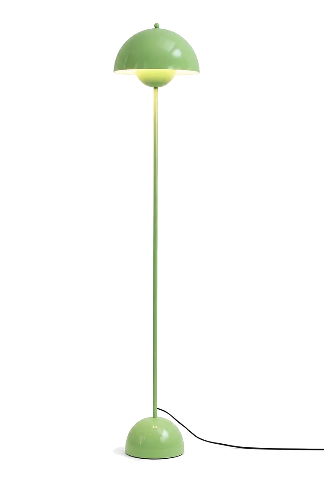
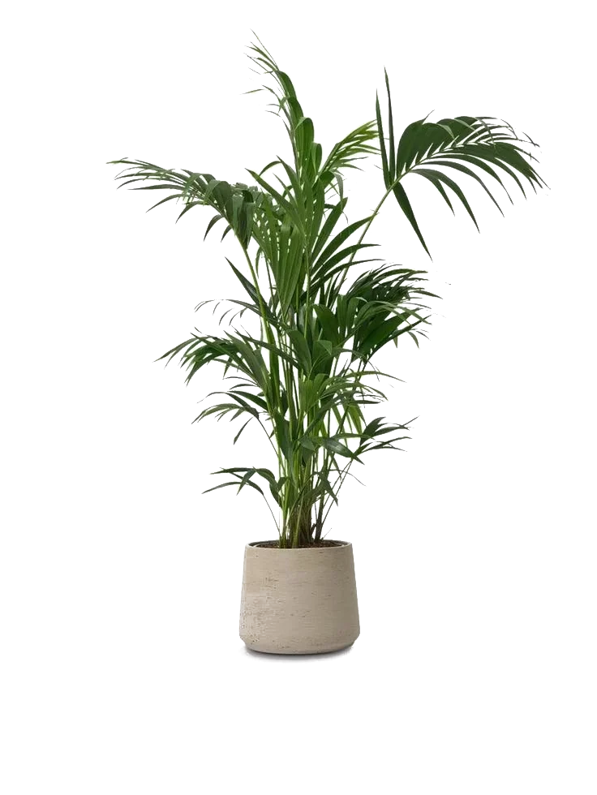
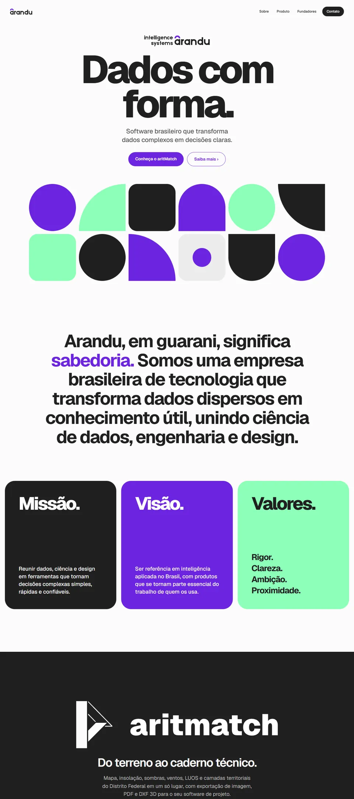
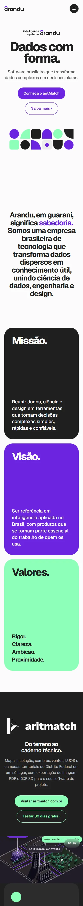
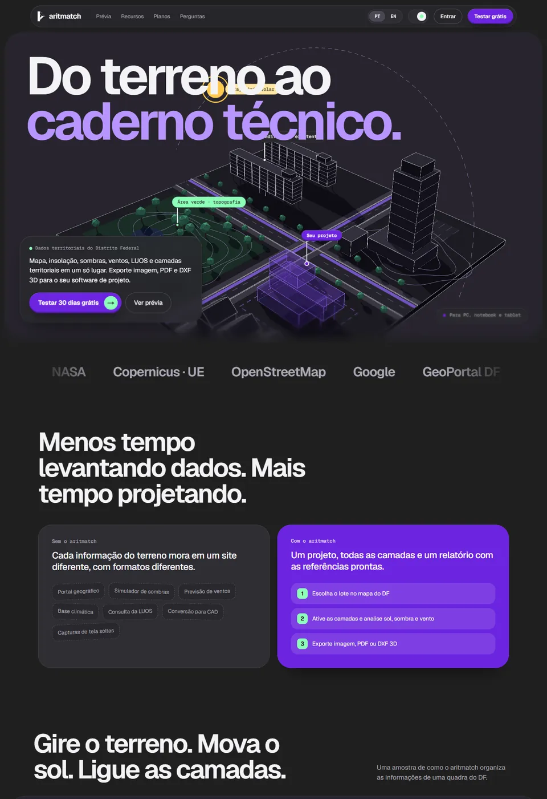

Engenheiro de Software · Web Designer
Lucas Petter.
CTO e sócio da Arandu Intelligence Systems, criador do Aritmatch. Desenho e desenvolvo sites para negócios.


Sócio & CTO
Arandu
Arquitetura, produto e engenharia em uma empresa de sistemas inteligentes.
Visitar site ›


Criador
Aritmatch
Um produto idealizado e desenvolvido do conceito ao código.
Visitar site ›

Engenharia com precisão. Design com intenção.
Sou Lucas Petter, formando em Engenharia de Software.
Web design para negócios.
Do primeiro rascunho ao site no ar.
Ferramentas do dia a dia.
Em conclusão
Engenharia de Software.
UNICEPLAC · Desde 2024
Vamos construir algo.
Projetos, parcerias ou uma conversa sobre produto.
lucas.petter@arandudf.com.brTouro alado, símbolo de São Lucas, o Evangelista